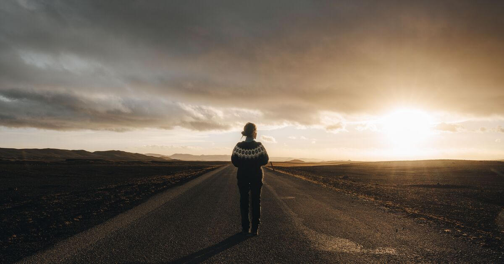
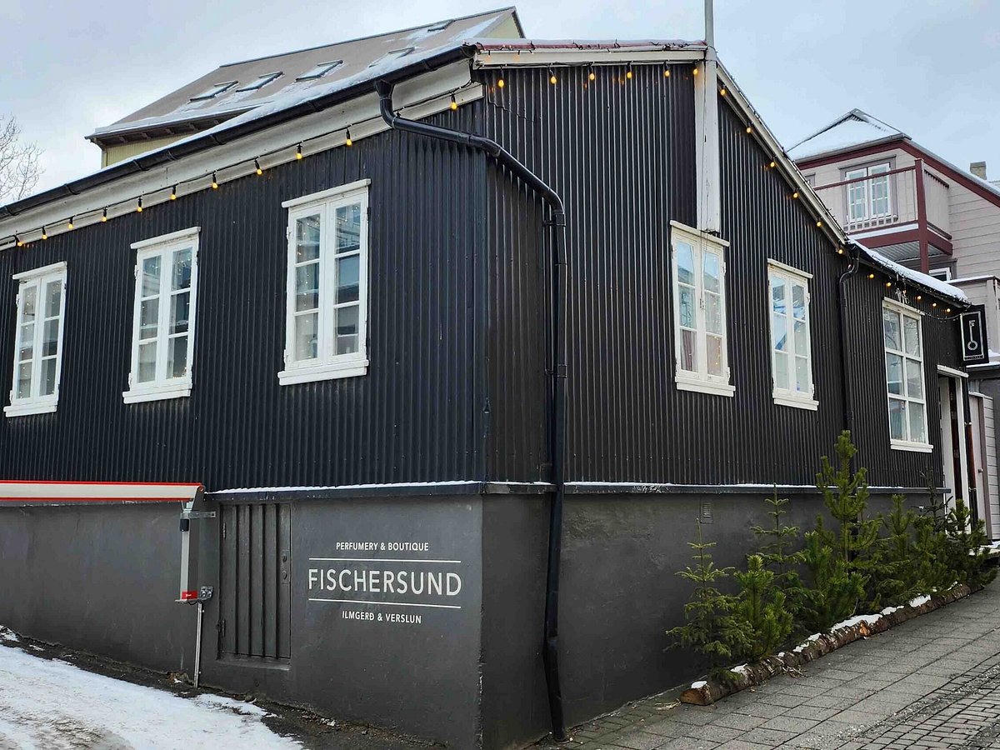
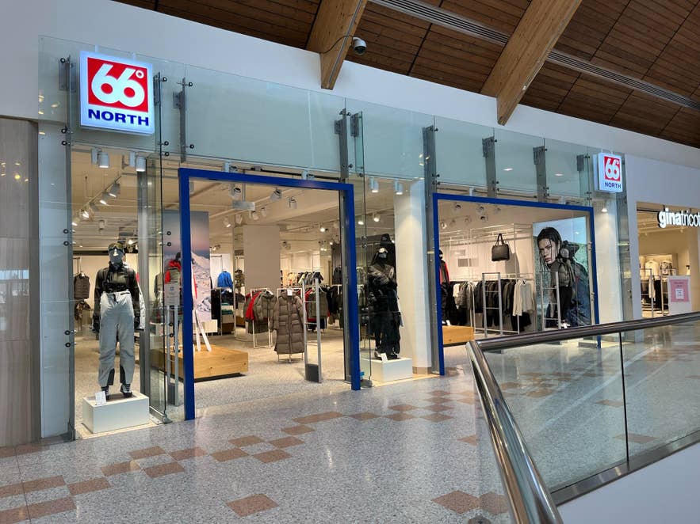
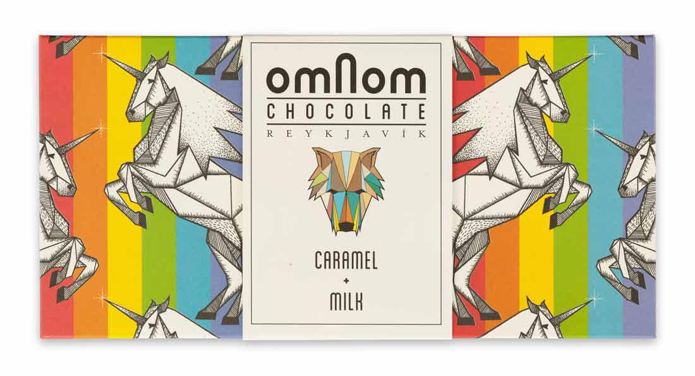
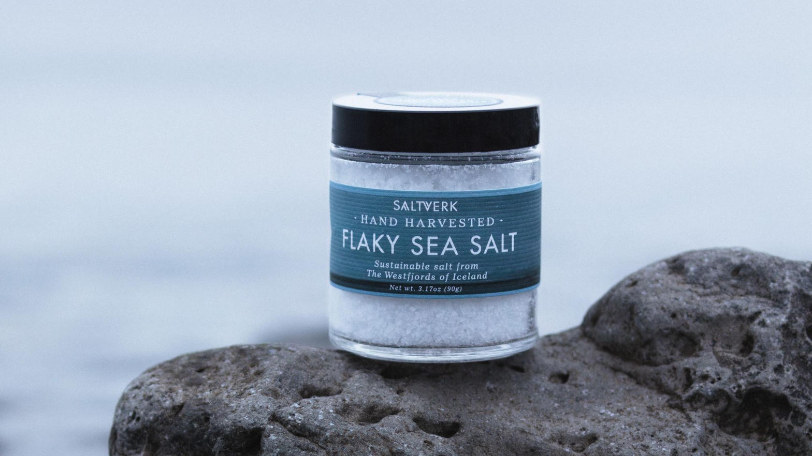
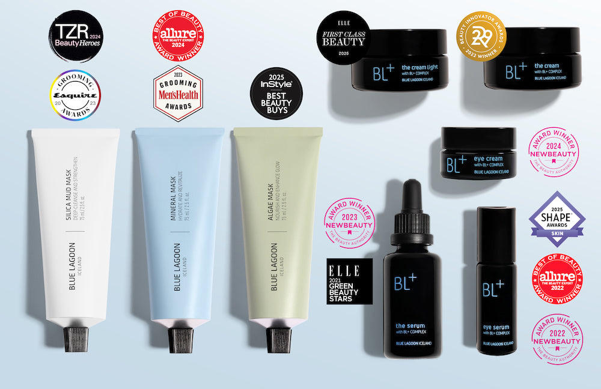

主要喺雷市 Laugavegur / Skólavörðustígur 一帶，11/9 同 11/19 有時間可以去。

最經典必買。手織冰島羊毛，暖又防水。建議去 Handknitting Association（Skólavörðustígur）。

Sigur Rós 成員開嘅香水店，氣味獨特，好適合當手信。

冰島本地戶外品牌，防水外套同技術服好出名。

雷市手工朱古力，包裝靚，味道特別，超市或專賣店都有。

地熱海鹽，有原味同煙燻味，好實用手信。

藍湖矽泥面膜同護理產品，機場同雷市都有售。